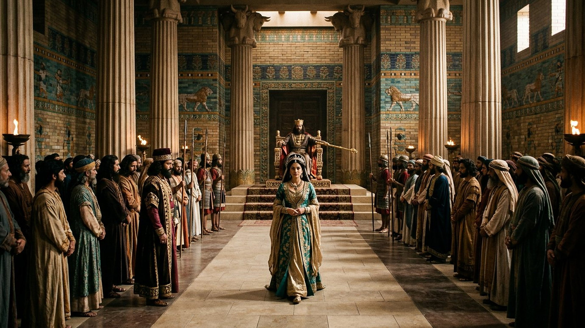
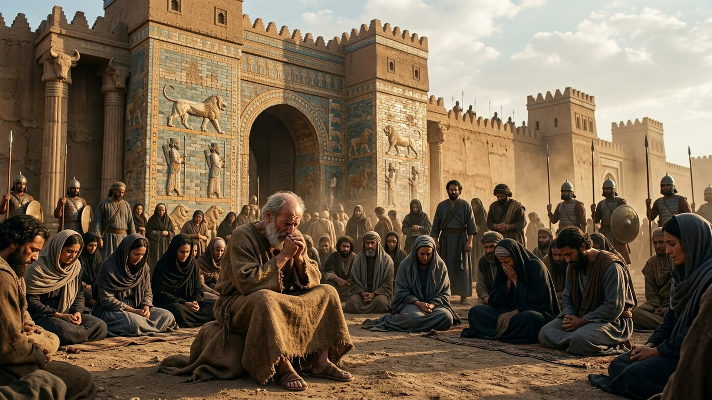

Salle 51 — Livre d'Esther ACCOMPLIE
Esther : « pour un temps comme celui-ci »
« Et qui sait si ce n'est pas pour un temps comme celui-ci que tu es parvenue à la royauté ? […] Et si je dois périr, je périrai. » — Esther 4:14, 16 (d'après Segond 1910)
Reconstitution numérique — « le roi tendit à Esther le sceptre d'or » (Esther 5:2, d'après Segond 1910) : l'approche qui pouvait coûter la vie.
L'orpheline de Suse au centre d'un empire
Dans Suse (en perse ancien, la capitale d'hiver des rois achéménides), Esther (en hébreu, translittération : ʾEstēr ; son nom hébreu est Hadassa, translittération : Hădassāh), jeune Juive orpheline élevée par son cousin Mardochée (translittération : Mordŏkay), est choisie comme reine par le roi Assuérus (translittération hébraïque : ʾĂḥašwērôš), sans révéler son origine. Lorsque Haman (translittération : Hāmān), premier dignitaire, obtient du roi un décret scellé ordonnant l'extermination de tous les Juifs de l'empire à date fixe — le treize du mois d'Adar (translittération : ʾĂḏār), tiré au sort —, Mardochée pousse Esther à intercéder, alors même que paraître devant le roi sans convocation est puni de mort, sauf si le roi tend son sceptre d'or. Après trois jours de jeûne de toute la communauté, Esther paraît, obtient gracieusement audience, dénonce Haman à son propre banquet ; le dignitaire est pendu, un contre-décret autorise les Juifs à se défendre, et les jours prévus pour le massacre deviennent la fête de Pourim (en hébreu, translittération : Pûrîm, « les sorts ») (Esther 1 à 10, résumé sobre). Les violences du jour de défense sont racontées par le livre sans être ni amplifiées ni célébrées ici : cette salle met en avant le décret renversé, pas la revanche.
Dans la lecture retenue par ce musée, le livre d'Esther est le récit d'une délivrance sans miracle nommé : le nom de Jéhovah n'apparaît pas dans le texte hébreu, aucune voix ne descend du ciel — mais une suite de « hasards » (une insomnie du roi, un registre lu à point, un sceptre tendu) compose une délivrance dont le lecteur discerne la trame. L'historicité des personnages et l'absence du livre à Qumrân sont exposées ci-dessous en DÉBATTU, en toute honnêteté.
Le récit en cinq temps
De l'orpheline cachée à la fête des sorts renversés, avancez d'une station à l'autre.

Le banc des preuves : une absence célèbre, un décor attesté
DÉBATTU
L'absence d'Esther à Qumrân : le chaînon manquant célèbre (EV-60)
Parmi les centaines de manuscrits du désert de Judée, presque tous les livres de la Bible hébraïque sont représentés — sauf Esther, dont aucun fragment certain n'a été retrouvé à Qumrân. Les spécialistes débattent de cette absence : hasard de conservation, réserve de la communauté envers un livre où Dieu n'est pas nommé, ou circulation différente. La salle l'enregistre comme un fait de transmission débattu dans son interprétation, sans en tirer de conclusion forcée sur le récit lui-même.
DÉBATTU
Le décor perse est réel, les personnages sont discutés
Le cadre, lui, est solidement attesté : la cour de Suse, ses briques émaillées à frises de lions et de taureaux (dont le musée du Louvre conserve des ensembles célèbres), le sceau royal irrévocable et l'administration en cent vingt-sept provinces correspondent au monde achéménide connu par les textes et les fouilles. En revanche, Esther, Mardochée et Haman ne sont pas attestés par des sources perses indépendantes, et l'identification même d'Assuérus — le plus souvent rapproché de Xerxès Ier (en grec, translittération : Xérxès) — reste discutée. La salle affiche donc le récit, son décor vérifié et la réserve des historiens, côte à côte.
LECTURE PROPHÉTIQUE
Une délivrance sans nom de Dieu, relue comme providence
Le texte hébreu d'Esther ne nomme jamais Dieu — singularité unique dans la Bible hébraïque avec le Cantique des cantiques — et la version grecque ancienne y ajoutera des prières explicites, signe que des lecteurs anciens ont comblé ce silence. Le musée suit la lecture du texte hébreu : une providence qui travaille en coulisses, comme dans le livre de Ruth (salle 50), par l'insomnie d'un roi, un annuaire lu au bon chapitre (Esther 6) et le courage d'une femme. Rien n'y est prédit à date fixe : tout y est renversé par des choix.
Quatre clés pour bien lire le livre d'Esther
1. Le courage d'Esther commence par un jeûne
Avant d'agir, Esther demande trois jours de jeûne à toute la communauté de Suse, servantes comprises : « alors j'entrerai chez le roi, malgré la loi. » La décision est personnelle, le soutien est collectif ; et sa phrase — « si je dois périr, je périrai » — n'est ni résignation ni bravade : c'est le prix consenti d'une intercession, dans la lignée des choix libres de ce musée (Ruth, salle 50 ; Jonas, salle 49).
2. Un décret « irrévocable » contourné, non violé
La loi des Mèdes et des Perses ne pouvant annuler le premier décret, la délivrance passe juridiquement par un contre-décret : les Juifs pourront se défendre et leurs agresseurs échoueront. Le musée note la mécanique sans la transformer en leçon de violence : le centre du livre n'est pas le nombre des morts du 13 Adar, mais le renversement d'une sentence d'extermination en jour de délivrance — et les dons aux pauvres qui accompagnent la fête.
3. Les « hasards » qui font une trame
Le récit aligne des coïncidences sans jamais les commenter : Esther choisie, un complot dénoncé et consigné, une nuit d'insomnie royale sur le registre exact du complot, un sceptre tendu. Aucune n'est un miracle au sens spectaculaire ; leur assemblage fait ce que le musée appelle ailleurs une providence en coulisses (salle 50) — la lecture reste proposée, le texte, lui, ne l'impose pas.
4. Pourquoi Esther est une salle de Prescience sans prophétie
Aucun oracle ne date la délivrance d'Esther : c'est Haman qui tire une date au sort, et ce sort est renversé. La salle ferme donc la série des récits de cour (Daniel, Ruth) sur une leçon limite : la prescience n'est pas la seule façon dont Jéhovah, dans la lecture du musée, conduit l'histoire — il y a aussi des temps où tout dépend d'une personne « parvenue à la royauté pour un temps comme celui-ci », qui doit choisir sans filet.
Prescience n'est pas fatalité — un sort tiré peut être renversé
Le pour (le sort, translittération : pûr) avait fixé le 13 Adar pour l'extermination : date publique, décret scellé, machine lancée. Il a suffi d'un jeûne, d'une approche risquée et d'une nuit d'insomnie pour que la date devienne fête. Dans ce musée, même les décrets portant un sceau royal ne sont pas des destins quand des humains choisissent le courage à temps.
Salle 50 : Ruth, l'autre délivrance en coulisses · Salle 49 : la sentence retirée à Ninive · Salle 2 : de Suse à l'empire de Cyrus
Écouter la salle
Transcription de la narration
Bienvenue dans cette nouvelle salle. Vous verrez d'abord une grande cour ancienne aux murs de briques colorées, puis une porte monumentale gardée par des soldats, et enfin une table dressée pour un repas de fête. Bonne visite à toutes et à tous. La visite avance en cinq étapes courtes. Prenez le temps d'observer chaque image et de lire les panneaux : ils présentent un grand courage, une absence remarquée dans des manuscrits célèbres, et les questions des spécialistes. Merci de votre attention.